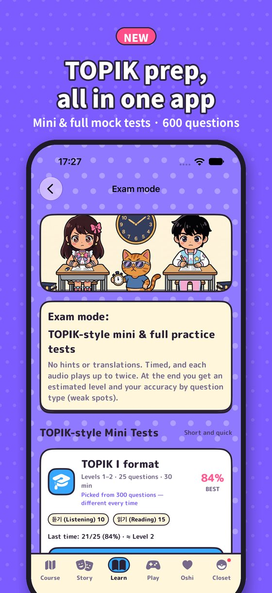
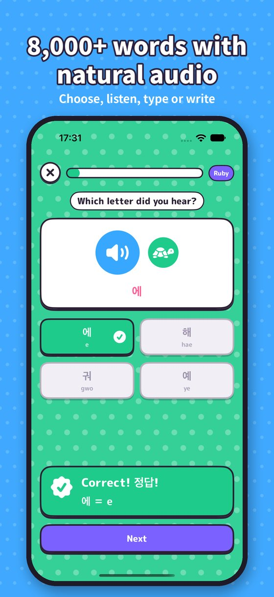
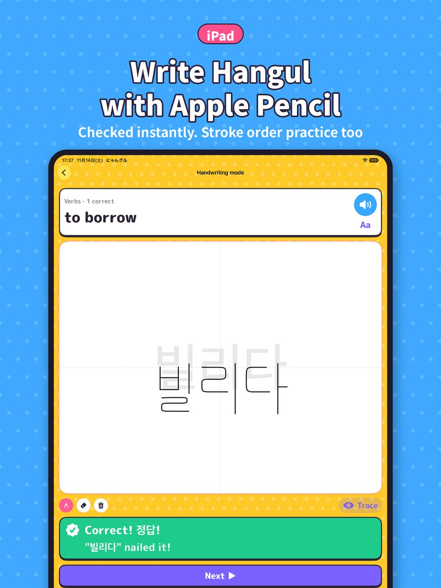

Vocabulary · Reflexes
Speed Quiz
How many can you answer in 60 seconds? Combos boost your score
From the mouth shapes behind Hangul to grammar, honorifics and the latest slang. 8,000+ words, all voiced with natural, native-like pronunciation. Games, a story, a textbook, trading cards, dress-up and photos of your oshi — your favorite idol. You'll keep thinking "just one more round," and before you know it you're reading, listening, writing and speaking Korean. Whether you're a K-pop fan or a K-drama lover, it's a Korean-learning game you'll actually want to play.

Update 1.3
600 questions in all. Take a quick 25-question mini mock test, or a full practice test close to the real number of questions and time limit. At the end you get a score, an estimated level and your accuracy by question type, so you can spot your weak points at a glance.



Play now
Play Balloon Catch, one of Nyangul's 9 mini games, right in your browser. DJ Ham calls out a Korean word — tap the balloon with that word before it floats away!

Balloon Catch
DJ Ham will say a word in Korean. Balloons with words on them will float up — tap the right one to pop it before it escapes into the sky! Popping the wrong balloon or letting the right one get away costs you a life.
Demo: 5 Intro-level questions


Clear!
Why Nyangul
Memorizing words and drilling questions gets old fast. Nyangul blends studying right into playing — and into supporting your oshi.
| Typical learning apps | Nyangul | |
|---|---|---|
| Reasons to keep going | Streaks only | A story, trading cards, dress-up, your bond with your oshi and daily missions |
| How you learn | Flashcards and multiple choice | A structured course and textbook, 9 games for repetition, and real drama lines for practice. Answer by choosing, typing or handwriting |
| Writing | Barely supported | Handwriting recognition with your finger or Apple Pencil, plus Writing Rush |
| Typing | Your regular keyboard | Practice typing and replying to messages on the same keyboard layout young Koreans use |
| Speaking & listening | Listen to audio, that's it | Natural-sounding recorded audio for every word and sentence. Answer out loud and get your pronunciation scored (Video-Call Pronunciation Check) |
| Checking your level | Accuracy rate only | 600 TOPIK-style questions. Full practice tests with a score, estimated level and weak spots by question type |
| Make it yours | — | Use photos of your oshi as icons, wallpapers, the home screen and clear screens |
| Price | Usually a monthly subscription | Start free, and buy once if you love it (no subscription) |

Course
Start with how to read Hangul and work through five levels — Intro, Beginner, Pre-Intermediate, Intermediate and Advanced — 487 stages in all. Get 60% right to pass, 80% for High Level, and every question right for a Perfect. You can replay any question you miss on the spot, and words you're starting to forget show up automatically in Today's review.


Story mode
Play as Yuna, Taehyung or Nyan the cat, and pick any name and birthday you like. Getting scouted, your first day as a trainee, refueling at a street food stall, a strategy meeting at a jjimjilbang (Korean spa), shooting a drama OST, your very first fan meeting… The story spans 24 chapters in three parts: Part 1 "The Road to Debut," Part 2 "Beyond the Debut" and Part 3 "To the World." Each chapter has its own learning theme — greetings, how Hangul works, particles, the past tense, honorifics and more. A teacher character gives you a short mini lesson, then you clear 8 questions in game form.


Textbook
Some things are hard to pick up from games alone, so the textbook explains how Korean really works. It starts from the very, very basics for total beginners — like how Korean and Japanese are alike — and the different mouth shapes for ㅡ and ㅜ, then covers particles, conjugation, irregular verbs, honorifics, key grammar for TOPIK levels 3–6, written style and essay writing, banmal (casual speech), and abbreviations, new slang and fan lingo. Every example sentence is read aloud (with slow playback), and each lesson ends with a review quiz.
Lesson 2 · Absolute Basics
ㅜ: round your lips and push them forward, like "oo." ㅡ: keep your lips spread as for "ee" and say "eu."
Mini games
Each game trains a different skill. All of them have six stages — Levels 1–5 plus Endless — and collecting ★ unlocks the next level and new outfits. You can also focus on just the topics you want, like "Food" or "Travel." Compete with players around the world on the Game Center leaderboards. And in the exciting final stretch, the music speeds up too.
Vocabulary · Reflexes
How many can you answer in 60 seconds? Combos boost your score

Vocabulary · Memory
Pair up Korean cards with their English meanings

How Hangul works
Build syllables by putting consonants and vowels together
Listening
Tap the balloon with the word you hear

Writing
A speed-writing race with your finger or Apple Pencil

Typing
Type the falling words before they hit the ground

Phrases · Listening
Fill in the blank in famous drama lines

Counting · Listening
Listen to each order and serve the right dishes in the right amounts

Conjugation
Chop the 다 off a verb and cook it into the form on the order. Master Mandu explains why it changes
There's also Character Worlds — 21 worlds, one for each character — where you clear one quick mini challenge after another. Levels 1–3 of every game are free to play.
Trading cards
Earn coins from games, missions and daily logins, then spin the Photo card gacha. The color of Nyan's entrance animation hints at a rare pull. Cards are flipped open one at a time, and the rarest card makes a big entrance at the end. Coins are earned in-game only — they can't be bought with money.


Wardrobe
Twelve outfits each for Yuna, Taehyung and Nyan. New looks arrive as you earn ★ in games, conquer Character Worlds and collect stamps for hitting your daily goal. The outfit you choose also shows up on the characters in the course and games.


Your oshi
Put photos of your oshi — ones you took or collected — all over the app. Drag to position and pinch to resize before saving. Photos are stored only on your device and are never sent anywhere. Swapping in your oshi photos is free.
Your oshi's face icon in chats, video calls and on the home screen.
Replace the big artwork at the top of the course screen with up to 5 photos that rotate daily.
Set the background for the course and chats, and adjust the dimming so text stays easy to read.
Clear a stage or game and get a reward photo picked at random from up to 10 of your favorites.

Talk & video call
In Chat with your oshi, answer by choosing a reply or by speaking. The Video-Call Pronunciation Check scores 20 phrases on whether your oshi would understand you. The more you talk, the deeper your bond grows, moving up a 10-step relationship ladder. Clearing story chapters deepens it too, and at the very top, a special scene and message are waiting for you.
Write · Type · Listen · Speak
No more "I can read it but can't write it" or "I understand it but can't say it." Each of the five skills gets its own practice.
Write Hangul with your finger and get it checked. On iPad, practice properly with Apple Pencil, just like writing in a notebook.
Practice on the same keyboard layout young Koreans use. You can also switch to the iPhone's Korean keyboard.
Type replies in Korean to messages from your oshi. 30 questions you can use in real conversations.
Listen and choose the meaning, or write down exactly what you hear. Sets of 10, with slow playback.
Answer situational conversations by picking from three choices, or by speaking or writing your own answer. Hints included.
A searchable dictionary of every word, plus 10-question sets by category and situation. Filter to show only your weak words.
Words you miss go into your notebook automatically. Accuracy by topic shows your weak spots at a glance.
About 30,000 audio clips, pre-recorded with AI speech synthesis. Words, example sentences, conversations and character lines all come with clear, natural pronunciation.
Exam mode
No hints, no translations. It's timed, and each listening question can be played up to twice. From 600 original questions covering TOPIK I and II, take a 25-question mini mock test or a full practice test close to the real number of questions and time limit (TOPIK I: 70 questions, 100 min / TOPIK II: 102 questions, 140 min), in a new mix every time. Afterward you get a score, an estimated level, your accuracy by question type, and explanations with audio for every question. Words also show their estimated TOPIK level, and you can save a test and finish it later.
* The TOPIK-style questions, scores and estimated levels are original to this app and are not affiliated with the official exam. Audio is pre-recorded using AI speech synthesis.

Every day
Three new missions every day. Clear them all for bonus coins.
Hit the XP goal you set to earn stamps and coins. The higher the goal, the bigger the reward.
Celebrate each character's birthday with a special scene and a one-day-only birthday card. Set your own character's birthday to any day you like.
Words you're about to forget come back at just the right time. Clear it once a day for bonus coins.
Graduate from a course to get a diploma with your name on it, plus rewards. Finish every course and your oshi hands you a certificate of completion.
Characters
A hamster DJ, strawberry triplets who sing in harmony, a frog who's a legendary drama director, a third-generation chaebol heir… In the Character Guide, you can see each character's profile and catchphrase (read aloud).


* All idols and characters in the app are fictional.
Price
The Intro through Pre-Intermediate courses, story Chapters 1–9, Levels 1–3 of the mini games, the Absolute Basics and Beginner textbook lessons, oshi photo swaps, the dictionary and more are free to play (the free version shows ads). Premium is a one-time purchase, not a subscription. Switch to a new device with the same Apple Account and just tap "Restore Purchases."
Premium
One-time purchase · no subscription
Price varies by country/region — see the App Store.
FAQ
No problem. The first time you open the app, it asks about your level and suggests where to start. The Intro course and the textbook's Absolute Basics start from how Hangul letters work and the mouth shapes behind them.
Yes. Nyangul supports both iPhone and iPad, and on iPad the text and characters are shown larger. Your progress syncs through iCloud, so you can play on your iPhone when you're out and pick up where you left off on your iPad at home. On iPad you can also practice writing with Apple Pencil.
Yes. The app is fully available in English — including the textbook — and you can also switch the display to Japanese in the app's settings.
No. Trading card coins are earned through games and missions and can't be bought with money. The only purchase is the one-time Premium upgrade.
Have another question? Visit the Support page.